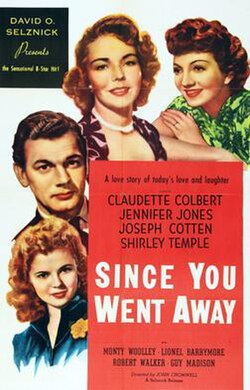

Since You Went Away
17th Academy Awards
(Oscars 1945)
9 Nominations, 1 Award
| Nominations | ||
|---|---|---|
| Category | Nominees | Result |
| Best Motion Picture | Selznick International Pictures | Nominated |
| Actress | Claudette Colbert | Nominated |
| Actor in a Supporting Role | Monty Woolley | Nominated |
| Actress in a Supporting Role | Jennifer Jones | Nominated |
| Cinematography (Black-and-White) | Lee Garmes and Stanley Cortez | Nominated |
| Film Editing | Hal C. Kern and James E. Newcom | Nominated |
| Art Direction (Black-and-White) | Mark-Lee Kirk and Victor A. Gangelin | Nominated |
| Special Effects | Arthur Johns and John R. Cosgrove | Nominated |
| Music (Music Score of a Dramatic or Comedy Picture) | Max Steiner | Won |